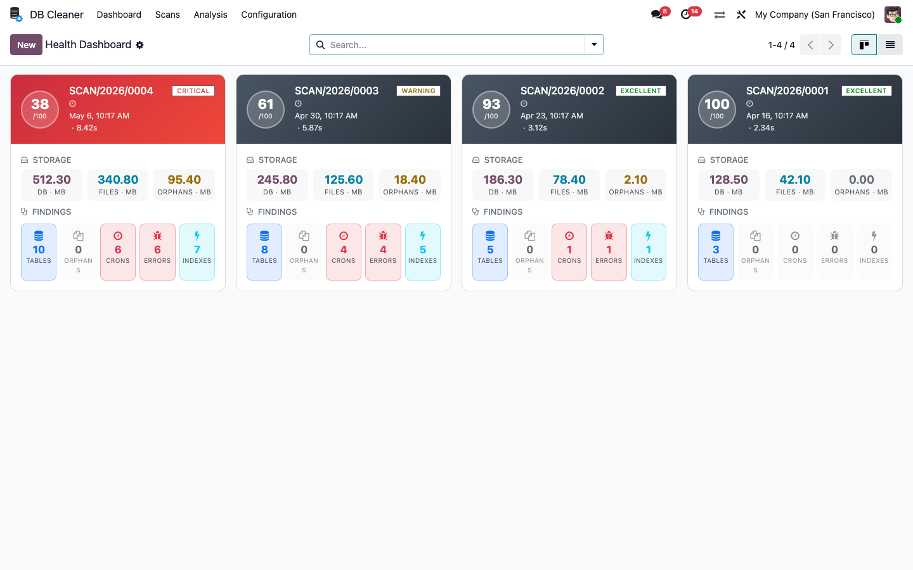
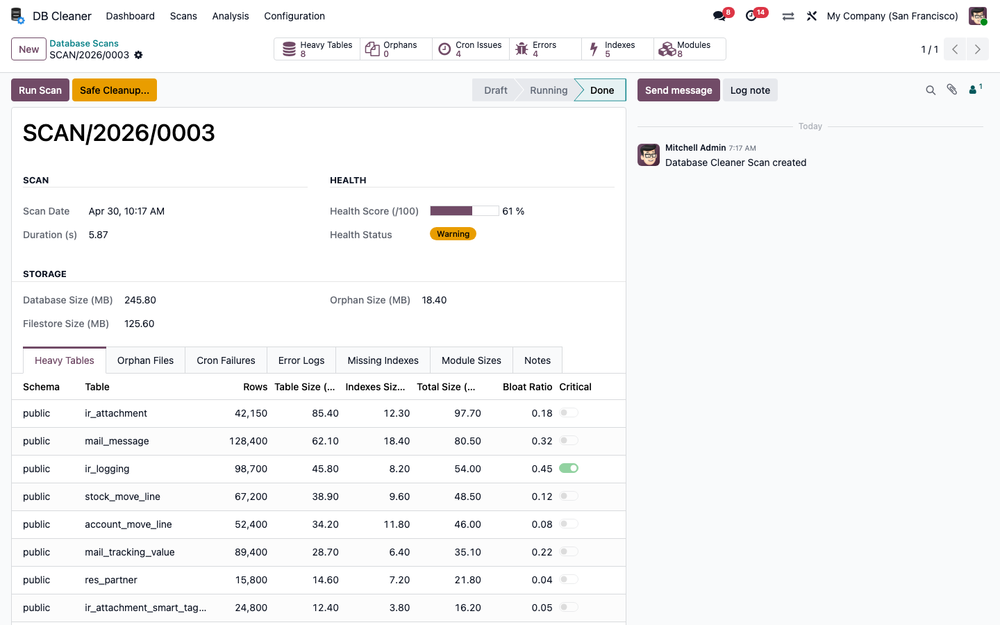
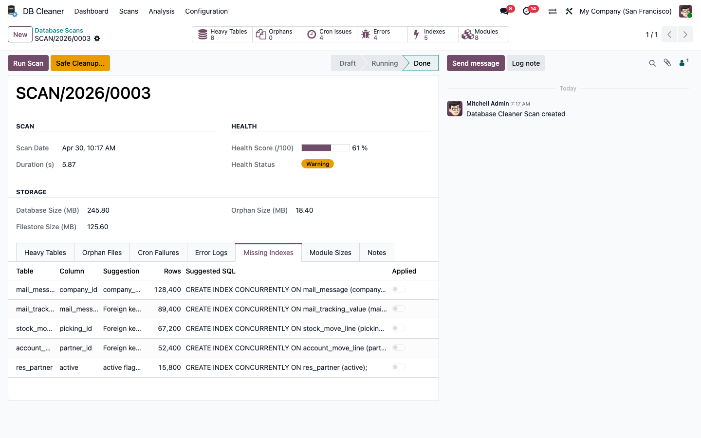
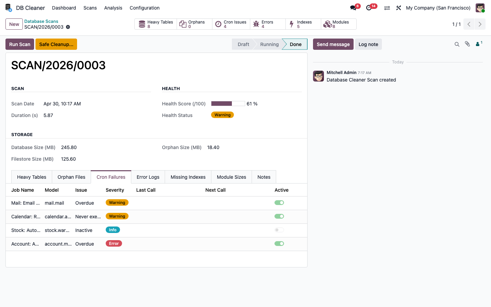
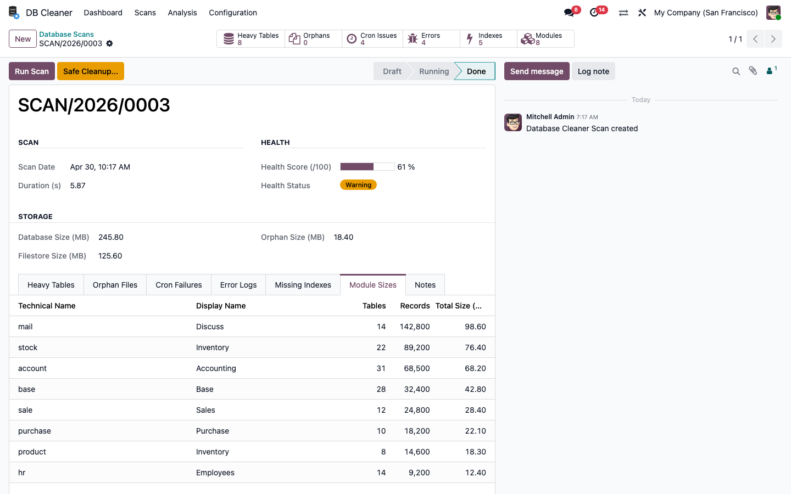
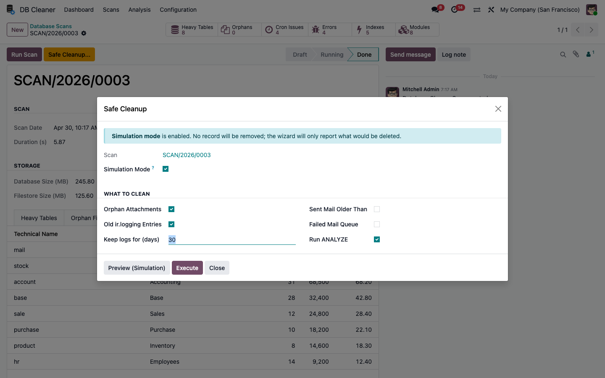
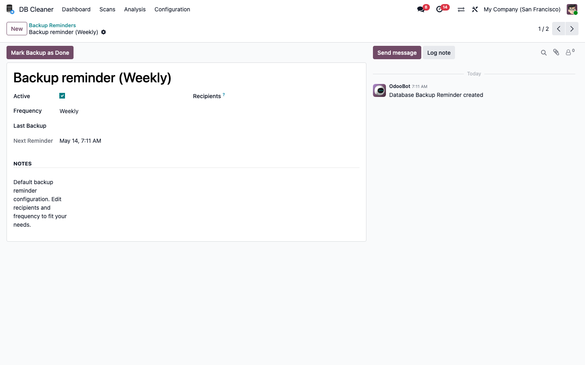

Heavy Tables Inspection
Sort tables by size, indexes weight or bloat ratio. Critical tables are flagged automatically. One-click ANALYZE to refresh PostgreSQL statistics on the fly.

Over time, every Odoo database accumulates orphan attachments, old logs, stuck mails and bloated tables. Cron jobs silently fail, indexes go missing, and storage grows unchecked — until performance drops and admins have no clear picture of what's wrong.
Smart Database Cleaner gives you a single, all-in-one tool to scan, audit and safely clean your Odoo database. Get an instant health score, identify the heaviest tables, find orphan files, spot failing crons, fix missing indexes — and clean up safely with a simulation mode that shows exactly what will happen before you commit.
| ✓ | Full Database Scan — one-click analysis of tables, attachments, crons, logs and indexes |
| ✓ | Health Score (/100) — instant rating with Excellent / Good / Warning / Critical badges |
| ✓ | Heavy Tables Detection — spots bloated tables with row count, size and bloat ratio |
| ✓ | Orphan Filestore — finds attachments whose linked record no longer exists |
| ✓ | Cron Failures Monitor — flags overdue, never-run or failed scheduled actions |
| ✓ | Error Logs Aggregation — groups recent errors from ir.logging and stuck mails |
| ✓ | Missing PostgreSQL Indexes — auto-detects FK / company_id / active columns missing an index |
| ✓ | Module Storage Footprint — storage breakdown per installed module to identify the heaviest ones |
| ✓ | Safe Cleanup with Simulation — dry-run mode shows exactly what would be removed before you commit |
| ✓ | Backup Reminders — configurable frequency with overdue notifications to admins |
| ✓ | Periodic Auto-Scan — optional weekly cron to keep history of database health over time |
| ✓ | Free & Open Source — LGPL-3 licensed, no fees, no limits |
Every scan becomes a beautiful card with a health score, color-coded gradient header, storage breakdown and findings tiles — so you spot issues in seconds.

Each scan opens into a comprehensive form with stat buttons, health score progressbar, storage metrics and tabbed findings. Run Scan in one click, and trigger Safe Cleanup when ready.

Sort tables by size, indexes weight or bloat ratio. Critical tables are flagged automatically. One-click ANALYZE to refresh PostgreSQL statistics on the fly.
Foreign keys without index, big tables with frequent seq scans,
active and company_id columns missing an index —
all listed with the exact SQL command to apply, ready to copy or
execute in one click.

Identifies scheduled actions that never ran, are overdue or have been disabled. Severity is color-coded; reactivate or trigger them on the spot.

See exactly which installed modules consume the most storage, with table count, record count and total MB per module. Decide which features to keep, archive or uninstall.

Before deleting anything, the wizard runs in simulation mode by default and reports exactly what would be removed. Toggle off only when you're 100% confident.
| Orphan Attachments | Files whose parent record is gone |
| Old Logs | Configurable retention (default 30 days) |
| Old Sent Mails | Configurable retention (default 180 days) |
| Failed Mail Queue | Stuck mails in exception state |
| ANALYZE | Refresh PostgreSQL statistics on heavy tables |

Pick a frequency (daily / weekly / bi-weekly / monthly), assign recipients, and let the cron notify them automatically when a backup is overdue. Mark backups as done with one click.

Identify and remove orphan attachments, old logs and stuck emails. See your storage drop immediately.
Detect missing indexes on heavy tables and apply them in one click — queries can become 10× faster.
Simulation mode by default. You always see what will be touched before any action is taken.
Every scan is stored. Compare scores week over week to monitor your database health over time.
This module is compatible with:
This module includes predefined translations for the following languages. If you need additional languages, feel free to contact us at r.syl20michel@gmail.com.
|
🇬🇧
English |
🇫🇷
Français |
🇩🇪
Deutsch |
🇪🇸
Español |
| Dependencies: | Base, Mail |
| License: | LGPL-3 |
| Odoo Version: | 18.0 |
You will get 90 days free support for any doubt, queries, and bug fixing (excluding data recovery) or any type of issue related to this module.
| ✉ |
Write a mail to us: r.syl20michel@gmail.com |
✎ Write To Us |